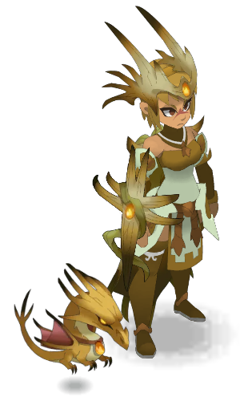
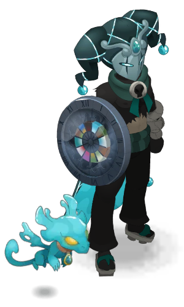
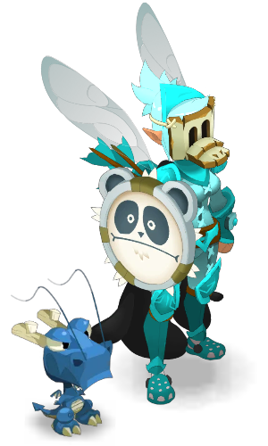

❄️ Chargement de l'arène 3D et des données Dofus…
❄️ Assistant Comte Harebourg
💥 Détecteur de dommage de poussée
Cherche et ajoute chaque adversaire de ton combat (comme dans le Bac à sable), puis lance l'analyse.
SALLES EN SONGE
Choisis la salle à afficher
👹 Maps Finale
 Maps des salles
Maps des salles
Tour
1
🔄 —
🛡️ INVULNÉRABLE
🏖️ Construis ta map
🖱️ Attrape un bord de la carte et tire pour l'agrandir ou la réduire (15 × 15 cases)
❄️ Le Comte en
 0 / 8
0 / 8

Mikassa-Ackermanà poser

Beboucafeà poser

Scarlette-Johansonà poser
🛡️ Classes 0 / 8
100
🖱️ molette ici : palier %🖱️ clic droit perso : vitalité
C'EST TON TOUR
👈Glisses tes persos sur la carte
🏳️ Abandonner le combat ?
Reviens au placement (compo, monstres, placement et initiative conservés) pour relancer, ou remets tout à zéro.
♻️ Réinitialiser la map ?
Les alliés quittent le terrain et tout revient à l'état de départ. En Bac à sable, le setup en cours est effacé.
 Comte Harebourgà poser
Comte Harebourgà poser
 Acnoh le poutch0 / 7
Acnoh le poutch0 / 7
 Osthéo le curieux0 / 7
Osthéo le curieux0 / 7